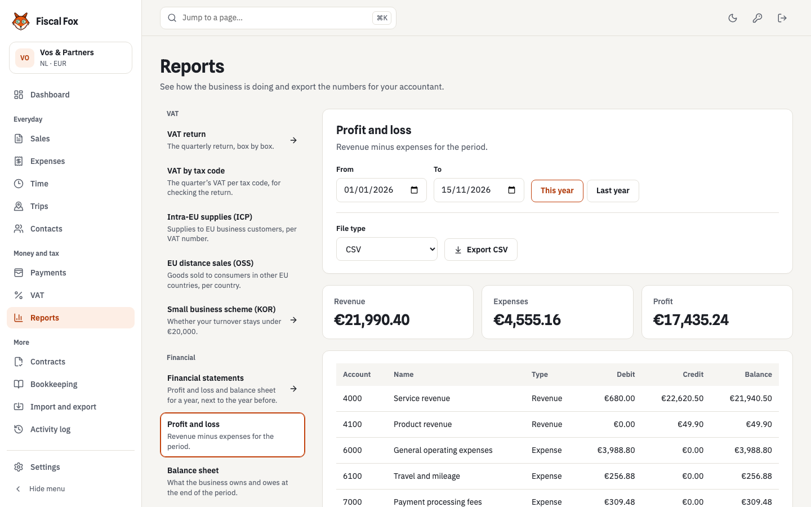
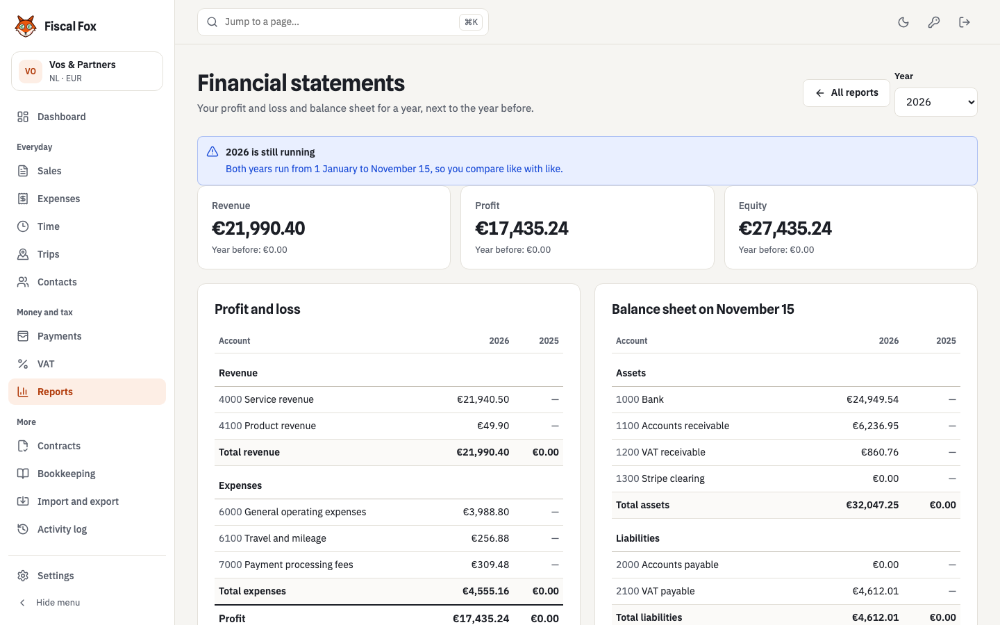
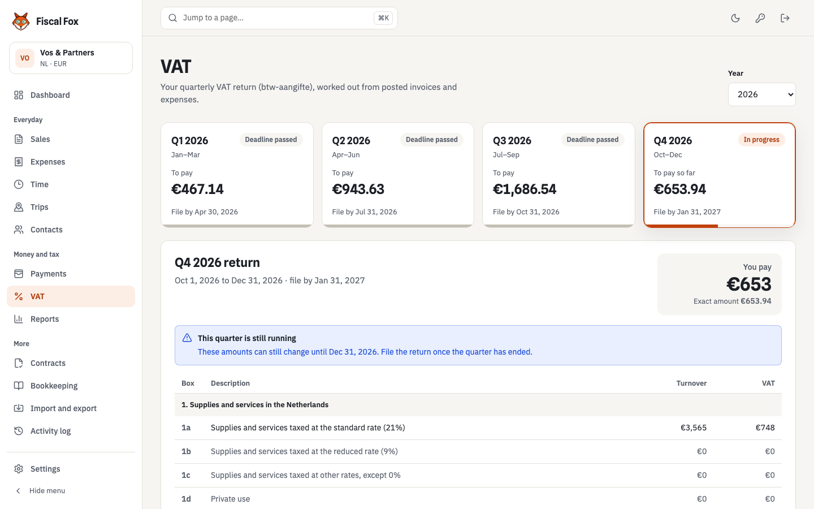

Reports and VAT
Reports shows how the business is doing over any period and exports the numbers for your accountant. VAT prepares the quarterly Dutch VAT return.
Reports

Pick a report on the left, then set the period: Year and Quarter for quarterly reports, or From and To dates (with This year and Last year shortcuts) for the rest.
| Group | Reports |
|---|---|
| VAT | VAT return, VAT by tax code, Intra-EU supplies (ICP), EU distance sales (OSS), Small business scheme (KOR) |
| Financial | Financial statements, Profit and loss, Balance sheet, Cash flow, Money in and out, Unpaid invoices |
| Insights | Customer insight, Supplier insight, Products and services, Cost categories, Trips timeline |
| Bookkeeping | Trial balance, General ledger |
Reports read posted bookkeeping only, so drafts never appear. How each figure is worked out is described in Accounting rules.
Export a report
Choose a File type and select Export: CSV, Excel (XLSX), PDF, or an XAF audit file where the report supports it. PDFs are prepared in the background; Your exports lists finished files to Download again later.
Before opening exported files in a spreadsheet, review cells that begin with
=, +, -, or @: spreadsheet software can run them as formulas.
Financial statements

Financial statements shows profit and loss and the balance sheet for a calendar year next to the year before, with revenue, profit, and equity at the top. While the year is still running, both years run from 1 January to the same day, so you compare like with like. These statements come from your bookkeeping; they are not filed with the Belastingdienst as they are.
VAT

The VAT page shows the year as four quarters. Each card shows the status (not started, in progress, ready to file, deadline passed), the amount to pay or reclaim, and the filing deadline: the last day of the month after the quarter. A quarter is Ready to file once it has ended and until its deadline.
Select a quarter to open its return, laid out like the Belastingdienst form (boxes 1a to 5c). The amount to file is rounded to whole euros in your favour, with the exact amount shown next to it.
Below the return:
- Where the numbers come from breaks the quarter down per tax code, sales and purchases, with document counts.
- Other declarations and checks covers intra-EU supplies (ICP), EU distance sales (OSS), and the small businesses scheme (KOR), each linking to its report.
Export the return as CSV, XLSX, or PDF for your records.
Important
Fiscal Fox does not file the return. Enter the amounts in Mijn Belastingdienst Zakelijk yourself. The current quarter can still change until it ends. The official links on the page open the Belastingdienst's pages (in Dutch).
See Accounting rules for how every box is calculated.
Who can do this
Everyone can view reports. Owners, admins, and accountants can export them. See Roles.